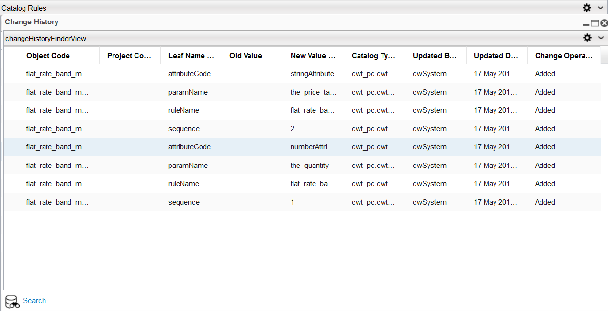

To view revisions that have been performed on a catalog rule, do the following:

You have the option of clicking any table column heading to display the information in either ascending or descending order. Additionally, clicking the down arrow within a column heading allows you to view the table information in a number of ways, including adding or removing columns, and freezing panes.
Refer to the Change History section for more information.